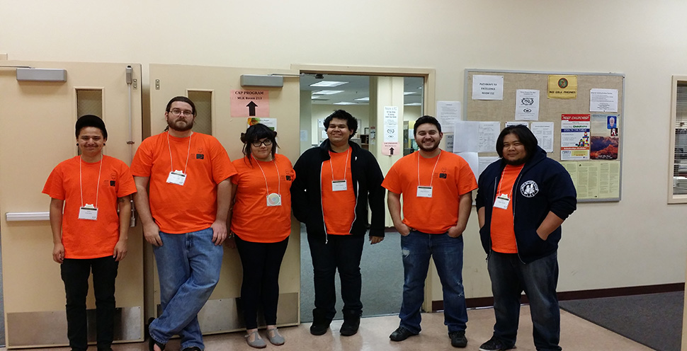

<div id="single-portfolio">
	<div id="portfolio-details" class="container">
		<a class="close-folio-item" href="#acm"><i class="fa fa-times"></i></a>
		
		<div class="row">
			<div class="col-sm-9">
				<div class="project-info">
					<h3>The ACM International Collegiate Programming Contest</h3>
					<p>Members volunteered at the <a href="https://icpc.baylor.edu/regionals/finder/southern-california-2016">Southern California Regional Contest</a> of the <a href="http://www.icpc2017.org/">ACM-ICPC</a>, that is held on the Riverside City College campus, for the past three years.</p>
					<p>This last <a href="http://www.icpc2017.org/">year</a>, we organized a team of committed members to take part in the competition under the <a href="https://icpc.baylor.edu/regionals/finder/southern-california-2016/standings">Software Engineering Club</a> name and while we weren't successful as we hoped, we learned a lot.</p>
				</div>
			</div>
			<div class="col-sm-3" style="padding-left:15px;padding-right:15px;">
				<div class="project-details">
					<h3>Event Details</h3>
					<p>For: Southern Californian Competitors</p>
					<p>Date: Every Fall Semester</p>
					<p>Tag: Computer Science, Programming, Events, Volunteering</p>
				</div>  
			</div>
		</div>
	</div>
</div>